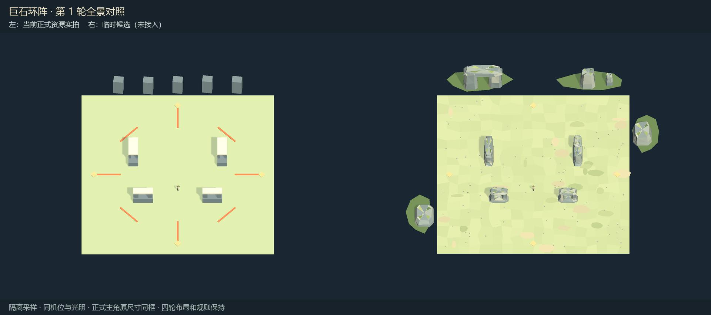
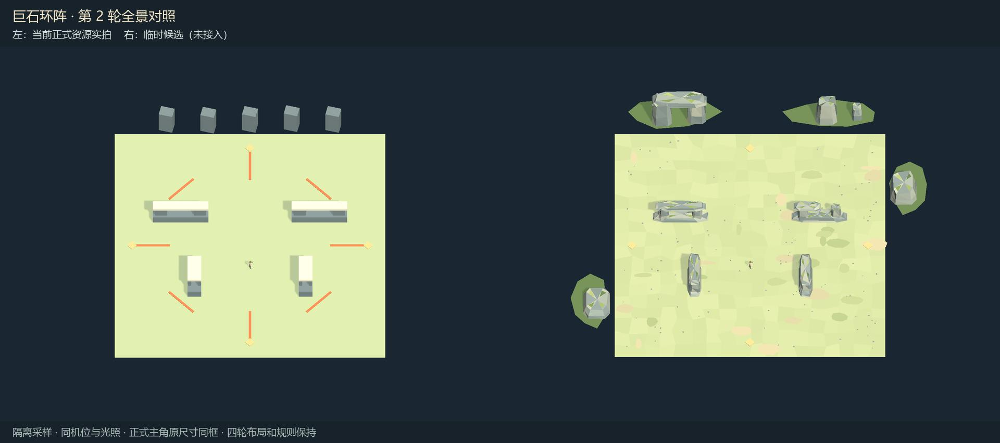
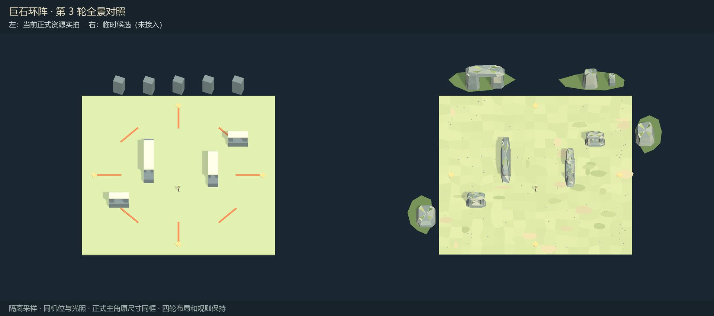
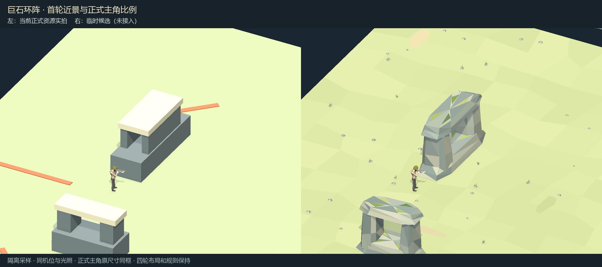
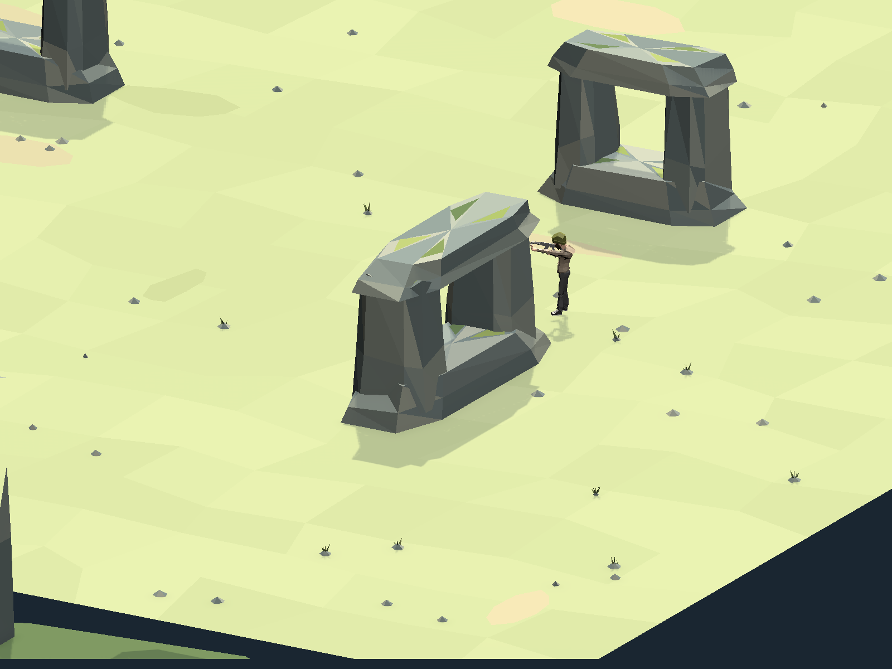

正式原图 · 候选原图
正式原图 · 候选原图
正式原图 · 候选原图
正式近景原图 · 候选近景原图
补光用于辨认背面闭合与石梁支撑；正式与候选使用同组预览光照。外圈地标位于活动范围外，深色背景用于隔离展示。逐轮参数与障碍投影检查 · 图片完整解码与正式资源SHA256 · 范围与验证说明
四轮原始配置直接回读，39×39米活动范围；逐顶点投影包围盒与配置一致，候选碰撞体为0。未改配置、伤害、人数、计时和单双人规则；未运行游戏业务测试、未打包。